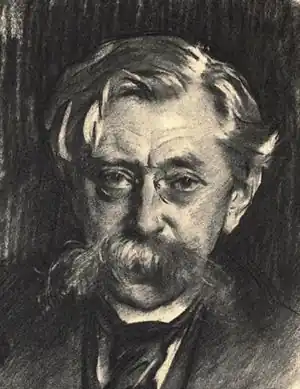
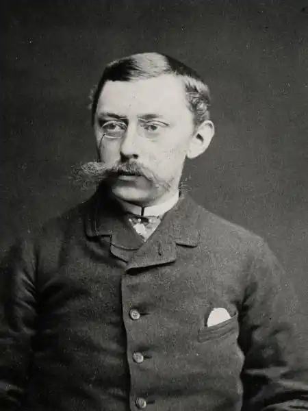
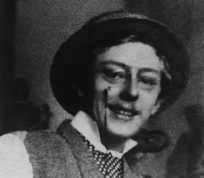

ВЕРХАРН, Еміль (Verhaeren, Emile — 21.05.1855, Сент-Аман, Бельгія — 27.11.1916, Руан, Франція) — бельгійський франкомовний поет.Його поезія відобразила всю складність суперечностей тієї перехідної епохи. Творчий шлях Верхарна у своїх основних, етапних поворотах виявляє разючу схожість зі шляхом В. Шекспіра — на новому, зрозуміло, витку історичної спіралі і в іншому національному вимірі: шлях цей веде від ранньої життєрадісної лірики через трагічні прозріння кризового періоду до мудрої прозорості пізніх років.
Поезії Верхарна притаманний глибокий і органічний зв'язок з народним підґрунтям, з історією країни, минулою і теперішньою, з прогресивними національними традиціями в літературі і мистецтві. Це традиції, закладені Ш. де Костером, з яким Верхарн споріднює глибоке проникнення в суть національного характеру та специфіку національного побуту, гостре відчуття справжнього історизму, дієве волелюбство. Це також традиції великих фламандських і нідерландських художників епохи Відродження і XVII ст., в першу чергу П.П. Рубенса та X. ван Рейна Рембрандта. Хоча ці останні належать до іншого виду мистецтва, їхній вплив безпосередньо проявився в поетичній творчості Верхарна. Пізніше, в роки своєї творчої зрілості, він присвятить цим двом художникам спеціальні монографії, написані з професійною тонкістю і майстерністю ("Рембрандт", 1904, "Рубенс", 1910). Дуже багато чого в творчих пошуках і досягненнях Верхарна пояснюється впливом французької літератури, зокрема — новаторської за духом і формою поезії В. Гюґо. Якщо з іменем Гюґо пов'язують звільнення від жорстких класицистичних норм, то з іменем Верхарна. цілком справедливо пов'язується утвердження — і не лише у франкомовній, а й у світовій поезії також — вільного вірша, або верлібру (vers libre).
Утім, Верхарн починав свій творчий шлях цілком традиційно. Народився він 21 травня 1855 р. в сім'ї дрібного рантьє у містечку Сент-Аман, що неподалік Антверпена. Навчався спочатку в колежі Св. Барбари в Генті, потім на юридичному факультеті Лувенського університету. Після його закінчення, плануючи займатися адвокатурою, стажувався в Брюсселі у відомого адвоката Едмона Пікара. Проте ще в колежі Верхарн захопився літературою і з 15 років почав писати вірші. Перший період творчої діяльності Верхарна позначений захопленням старовинними фламандськими майстрами. Це був час зближення Верхарна з групою "Молода Бельгія" (К. Лемоньє та ін.), яка пропагувала відродження інтересу до національного життя і національної минувшини. Так вийшла друком перша поетична збірка Верхарна — "Фламандки" ("Les flamandes", 1883). "Фламандки" — це соковиті, реалістичні, в дусі стародавніх майстрів, замальовки селянського життя. Багатство і яскравість фарб поєднується в них з майже скульптурною опуклістю, пластичністю образів ("Старовинні майстри", "Випікання хліба", "Клуня", "Недільний ранок "та ін.). Верхарн не заплющує очі на темні сторони селянського життя, але він ще не бачить і не усвідомлює реальних масштабів майбутньої кризи патріархальних відносин, породжуваної стрімким розвитком Бельгії. Звернення до ренесансних традицій живопису багато в чому визначає і поетику цієї збірки: їй властива надзвичайно багата кольорова гама, переливи світла та тіней. Верхарн ще притримується в ній традиційної системи віршування з її правильними розмірами і чіткою строфічною організацією. Особливо охоче використовує він форму сонета, розроблену поетами Відродження та оновлену парнасцями і символістами. Поетична збірка "Ченці"("Les moines", 1886), яка з'явилася після "Фламандок", різко контрастує з ними за темою і настроєм, провіщаючи в найближчому майбутньому різкий злам у світовідчутті поета.Катастрофічно бурхливий розвиток кризи патріархальних відносин, розклад і загибель сіл під тиском міста, що охопили Бельгію з середини 80-х років, постає перед загостреним, поетично-образним баченням Верхарна як грандіозна і безутішна трагедія. Дійсність, ще донедавна така тривка, така чуттєво-конкретна, раптом втрачає реальність, починає сприйматися як маячня, як виплодок гарячкової, галюцинуючої уяви. Поетичним вираженням цього кризового світовідчуття стали збірки "Вечори" ("Les soirs", 1888), "Розломи" ("Les debacles", 1888), "Чорні смоло-CKunu"("Les flambeaux noirs", 1890), що склали своєрідну поетичну трилогію. Похмурі образи, які виникають у віршах цих збірок, мають зазвичай узагальнено-символічний смисл. Вони виростають до величезних розмірів, розгортаються у масштабах всесвіту і вічності. Грізно і страшно палахкотять пожежі присмерків, зіходять на землю нереальні у своїй невідворотності вечори. Чорними силуетами з'являються на їхньому фоні знаряддя тортур і страт — від стародавніх хрестів до сучасної поету гільйотини. Услід за ними постають картини самих цих страт, які уявляються Верхарном як якийсь страшний бенкет — "бенкет крові і металу". Примара розпаду, розкладу, смерті невідворотно виринає на його шляхах: вона то являється "у шатах золотих" осіннього згасання, то привиджується "у тузі вечоровій", то зненацька виростає перед ним "поміж юрби, в туманах" міських вулиць (вірші "Числа", "Мрець", "Осіння пора" та iн). Світло і тепло, щедро розлиті в ранніх поезіях Верхарна, зовсім покидають ці трагічні збірки: у них панує вічний — всесвітній — холод і вічний — також всесвітній — морок. Відповідно змінюється й гама фарб, якою користується поет. Радісне поєднання багряного і білого кольорів, характерне для "Фламандок", поступається місцем похмурій багряно-чорній гамі, і це трагічне поєднання залишається домінуючим впродовж усіх трьох збірок. Водночас усе наполегливіше вривається в них металевий блиск золота, утворюючи з основним, чорним, кольором ще одне виразне поєднання, яке стане домінуючим, коли поет впритул звернеться до теми міста. Але вже тут світло і тіні міста сприймаються ним як "битва золота й пітьми". На прикладі старих майстрів, Рембрандта перш за все, Верхарн осягає також і таємницю того особливого освітлення, коли центральна постать мовби вихоплюється з навколишнього мороку яскравим променем світла. Незважаючи на всю їхню особливість, віршам трагічної трилогії Верхарна притаманна своєрідна "вселюдськість". Можливо, найповніше ця якість виражена у вірші, яким відкривається збірка "Вечори" і який багатозначно названий "Людство": Вечори, розіп'яті на обрії в огнях,В болотах відбили тугу і благання;В болотах, немов у дзеркалах,Стигне кров вечірнього смеркання.Вечори, розіп'яті на обрії в огнях!Пастухи ідуть дорогами сумними, Череди женуть на водопій в віках.Смерть зійшла в скривавлених огнях!І встає, Ісусе, над серцями злимиНа землі Голгофа в чорних небесах.Вечори, розіп'яті у чорних небесах,Затаїли стогін і страждання; І немає більш надій в людських серцях,Бо стоять в скривавлених огняхВечори, розіп'яті у чорних небесах!(Тут і далі пер. М. Терещенка)Образ розп'яття, Голгофи виступає тут не стільки в ортодоксально-церковному своєму значенні, скільки в значенні ширшому, символічному — як поширена в тогочасній літературі міфологема, як втілення в добре знайомому образі страждань і смерті Христа ідеї людяності, котрий страждає і приносить себе в жертву заради оновлення життя. Важливо підкреслити при цьому, що тут уже в самій безнадійності приховується надія: бо ж услід за розп'яттям неминуче постане — Воскресіння! Своєрідне воскресіння надій, віри в життя, у майбутнє Верхарн пережив у 2-ій пол. 90-х pp. Подальший його шлях проходить через збірки "Поля в маячінні" ("Les campagnes hallucinees", 1893 ) і "Примарні села" ("Les villages illusoirs", 1894) до "Miст-спрутів"("Les villes tentaculaires", 1895) — найбільш яскравому і похмурому, трагічному та оптимістичному водночас із його поетичних циклів кінця XIX ст. "Міста-спрути" — це високохудожня спроба образного осмислення тих реальних суперечностей, які несе в собі сучасне місто. Саме з цих суперечностей виникають два основні ракурси, в яких порушується в цій збірці тема міста: викривальний, сатиричний і патетичний, стверджувальний. Заголовний емблематичний образ велетенського міста-спрута, яке поглинає розорене село, подає Верхарн вже в завершуючому попередню збірку вірші "Похід": А ген з-за обрію встає,Під небом темним дивно виграєСвоїм чолом — Фавором осяйним,З димами чорними і запальним диханням,Підвівшись над людським стражданням,Велике місто марев і облуд, З заліза й мармуру і в сяйві золотім.— Мов спрут.Вірш "Рівнина", який відкриває збірку "Міста-спрути", розширює і поглиблює цю тему} але справжньою його експозицією є вірш "Душа міста". Його напружена ритміка передає могутню пульсацію міського життя. Верхарн детально змальовує все, що перетворює місто у страхітливого спрута, який висмоктує живу кров рівнин: владу золота; продажність, що панує на торжищах, де "продають без сорому любов" і де "продаються боги всіх релігій"; розпад мистецтва і моралі ("Статуя буржуа", "Торжище", "Видовища", "Гулящі" та ін.). Але Верхарн бачить місто і в іншому ракурсі: як згусток людської енергії, дивовижний витвір людських рук ("Порт", "Заводи "ram.). Поетика цієї збірки — така ж, як і двох попередніх, багато в чому ще пов'язана з поетикою "Вечорів", "Розломів" і "Чорних смолоскипів", але водночас суттєво відрізняється від неї. Тут панує та сама гама, але при цьому жовтий колір — колір золота — набуває зловісного відтінку. Водночас посилюється пластична виразність створюваних Верхарном образів — їхня об'ємність, скульптурність підкреслюється самими заголовками ("Статуя полководця", "Статуя буржуа "). Саме з появою цих збірок пов'язане й становлення вільного вірша в поезії Верхарна. Вільний вірш Верхарна — своєрідний і виразний. Як правило, він є римованим віршем, де сміливо використовуються асонанси та алітерації, а також рефрен і повтор. Водночас Верхарн відмовляється і від правильного розміру, вільно варіюючи довжину рядків, і від традиційної строфіки. Він замінює строфи неоднаковими за об'ємом періодами, рух вірша в яких точно відображає рух закладеної в ньому думки: Вулиця, гомін і рухТіл і голів, ніг і плечей, литок і рук,Ніби у безвість летитьКожної хвилі, щомить.Зненависть, помста і гнівВулицю вщертьВбрали в червоне у млі вечорів. ("Повстання")Сам поет, відповідаючи на одну з анкет, запропонованих йому сучасниками, писав: "Вільний вірш — наймолодша рослина Парнасу.